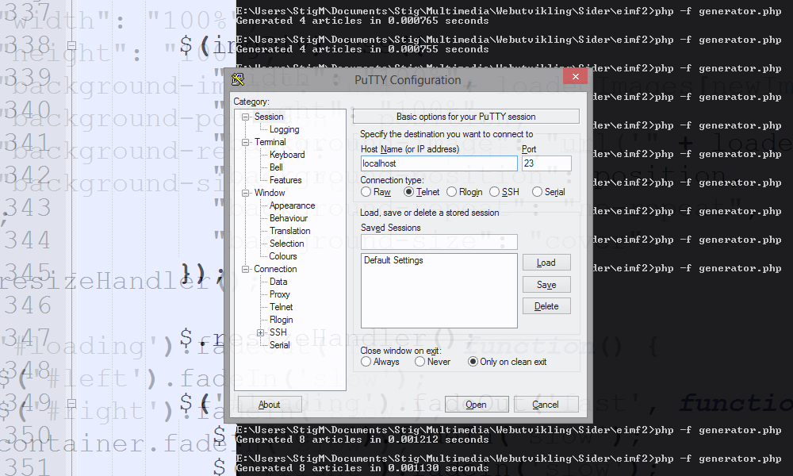

telnet on modern Windows
2010-11-08
The telnet feature is disabled on Windows Vista (and newer) as default. Most likely because it requires resources (very few though) and the average user will most likely never need it. It's however still useful for developers like me (and sys-admins) as I recently needed it for Android development. In order to develop applications using location based services, you need to send the Android emulator one or more coordinate sets with a longitude & latitude of it's current virtual position. This via telnet.
A little off topic there, but here's how you enable telnet in modern Windows:- Press the Start button
- Control panel
- Programs (...and features)
- Turn Windows Features on and off
- Find and tick the Telnet Client
- Press OK
- Reboot
That's it! Telnet command is now working in CMD. An alternative is to download and use PuTTY.